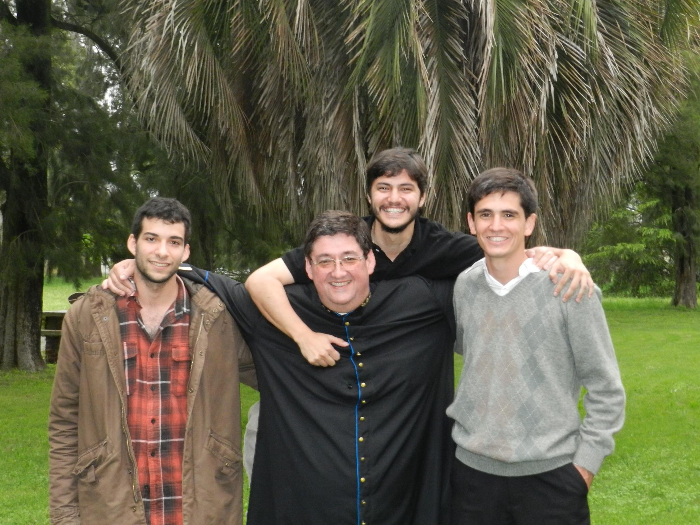

| Cargo | Nombre | Foto |
|---|---|---|
| Sacerdote | Germán Andralli |  |
| Secretario/a | Liliana López | |
| Tesorero/a | José Herrera |
Nuestra parroquia se conforma por nuestro querido sacerdote Padre Germán Andreolli que lleva más de 35 años de sacerdocio y se desempeña sobretodo en ayudar a los más jóvenes en su vida de fe y se encarga delas misas y casamientos sobre todo del barrio Güemes.
La secretaría esta actualmente a cargo de Liliana López que organiza con mucho cariño todas las actividades de la comunidad junto con el padre y ayuda a coordinar toda la ayuda que se distribuye y atiende los telefonos y redes sociales para responder cada duda e informar todas las novedades de la parroquia
La tesorería la lleva adelante José Herrera contador y gran profesional que tiene una gran responsabilidad en los manejos de los gastos y donaciones de la gente y lleva en el cargo más de 10 años por la gran confianza que el padre le tiene.